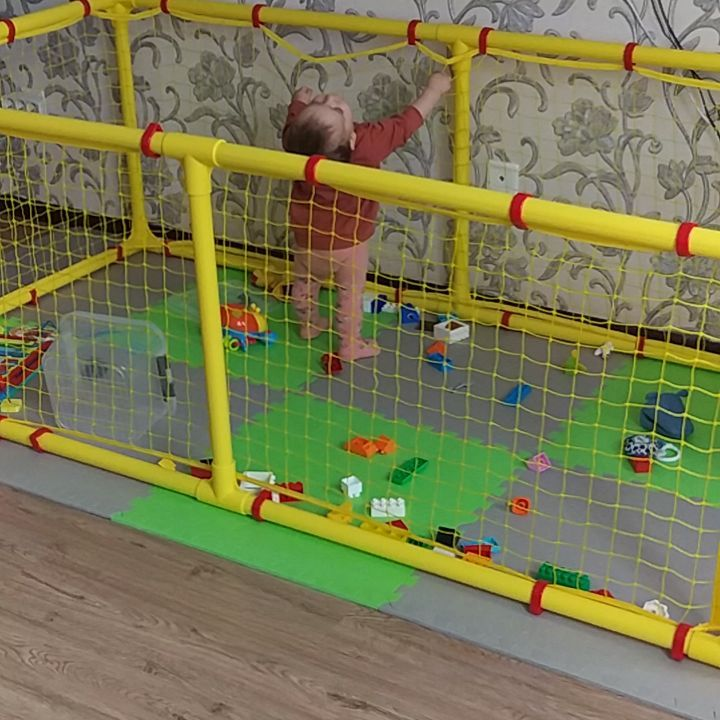

Lečo podľa @my_happy_life_77 — Normy Jedál
Многие ,смотря видео с нашими детками,замечали манеж,и стали задавать вопросы : Какая фирма? Размер? и т.д.
Решила написать свой отзыв.
Меня,как всех мамочек,очень волнует вопрос безопасности ребенка. Очень часто,особенно с двумя детками,нужно сделать 100 дел одновременно,и, думаешь "Куда же посадить,чтобы не упал?"
Этот манеж для меня просто спасение.
И размер,и качество. По цене, кому-то покажется дорого,для кого-то нормально.
Дал игрушек,и мин. 15-20 у тебя свободные руки.
А ещё ,я замечала,детки очень быстро учатся ходить в нём,стараясь удерживать равновесие за шевелящуюся сетку.
Это 2й наш манеж,1й был немного больше,и после Машеньки продала,практически за туже цену,т.к. был в идеальном состоянии,т.к. покупался именно под размеры другой квартиры.
Вообщем ,покупала на сайте lecoshop.ru(сейчас ,если не ошибаюсь,можно приобрести на Ozon) ,в районе 6000 р. Доставка около недели,рассчитывалась отдельно. Размер 100*200 см. На сайте множество размеров и форм.
Коврики покупала отдельно на #ozon около 1500 р.
А вы как считаете,стоит ребенка держать в манеже? Если да,какой был у вас?
#дом #семья💞 #дети #безопасность #детскиетовары #манеж #игрушки #магазин #леко #leco